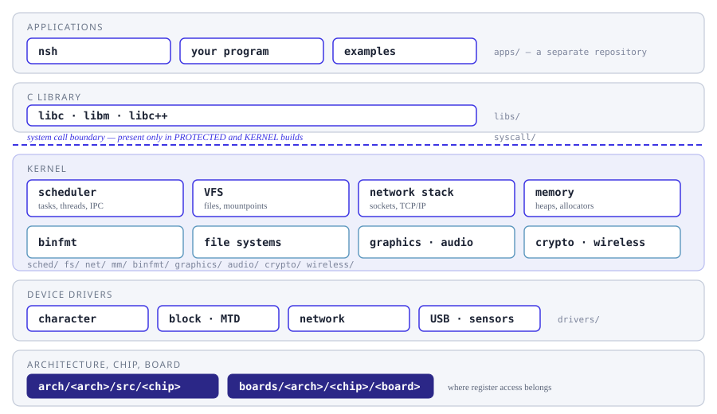
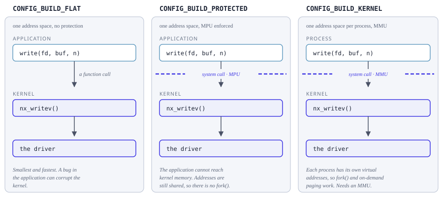

OS Design
How NuttX is put together, subsystem by subsystem. The sections follow the source
tree: what lives under sched/ is described in Scheduling,
what lives under fs/ in NuttX File System, under drivers/ in
Device Drivers, and so on. Each subsystem is described once, going
from what it is, to how it works, to the interfaces it offers.
For the POSIX interface an application sees, go to Userspace API instead. That is a different question – what you may call – and it has its own section.


Where each section of this documentation sits in the system, and which directory of the source tree it describes.
Build modes
Before reading any subsystem page it is worth knowing which build mode you are in, because it decides whether there is a boundary between your application and the kernel at all. The Kconfig choice that selects it is called Memory organization, under Build Configuration.


The same write() under CONFIG_BUILD_FLAT,
CONFIG_BUILD_PROTECTED and CONFIG_BUILD_KERNEL.
A flat build is one program: calling write() is a function call, and an
application bug can corrupt the kernel. A protected build is two blobs, one
privileged and one unprivileged, with an MPU between them, so the same call
becomes a system call; no address mapping is performed, so the two blobs
still share one set of addresses. A kernel build gives each process its own
address environment through an MMU. That is what fork() needs – the
child gets its own copy of the parent’s memory at the same virtual
addresses – and what CONFIG_PAGING requires as well.
Much of what the pages below say depends on this choice, which is why it is worth settling first. That is the short version; the page below is the long one, and takes each mode in turn, with on-demand paging and address environments described alongside them.
The kernel
Device drivers
By far the largest part of the OS: drivers/ holds 59 subdirectories, of
which storage is five. Everything a board talks to goes through here.